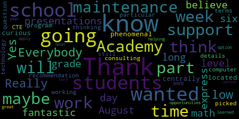

AI-generated transcript of Budget Hearing: Academic Programming Continued
English | español | português | 中国人 | kreyol ayisyen | tiếng việt | ខ្មែរ | русский | عربي | 한국인
Back to all transcripts
[Mustone]: What if we just, oh. Do you guys mind if I check my sound? Can someone say hello? Hi. Thank you, Paula. All right, the sound is working. Great. I have a lot of help here. Hello, everyone.
[Lungo-Koehn]: Hi, Teagan.
[Mustone]: I think we're all overtired in our house. We're all a little slap happy.
[Van der Kloot]: I have to say, everybody looks so tired already. It's only Thursday. What? Who looks tired? Everybody. Not you. All right, one, two, three. Maybe it's just, I'm tired.
[Lungo-Koehn]: Okay. So we have tonight and tomorrow night, budget meeting seven to nine. We will get started. We have all seven present and we are live. Meeting date, May 18th, 2021, committee of the whole meeting. Please be advised that on Tuesday, May 18th, 2021 at 7pm, there will be a Committee of the Whole meeting held through remote participation. Pursuant to Governor Baker's March 12th, 2020 order, suspending certain provisions of the Open Meeting Law, Chapter 30A, Section 18, and the Governor's March 15th, 2020 order imposing strict limitations on the number of people that may gather in one place. This meeting in the Medford School Committee will be conducted via remote participation to the greatest extent possible. specific information, the general guidelines for remote participation by members of the public in parties with a right and a requirement to attend this meeting can be found on the City of Medford website at www.medfordma.org. For this meeting, members of the public who wish to listen or watch the meeting may do so by accessing the meeting link contained herein. No in-person attendance of members of the public will be permitted, but every effort will be made to ensure the public can adequately access the proceedings in real time via technological means. In the event that we are unable to do so, despite best efforts, we will post on the City of Medford and Medford Community Media websites and audio or video recording, transcript, other comprehensive record and proceedings as soon as possible after the meeting. The meeting can be viewed through Medford Community Media on Comcast Channel 22 and Verizon Channel 43 at 7 p.m. You can call in by using phone number 1-929-205-6099. Please enter meeting ID 9267229 6484 when prompted. Additionally, questions or comments can be submitted during the meeting by emailing medfordsc at medford.k12.ma.us. Those submitting must include the following information, your first and last name, your Medford street address, your question or comment. The agenda will be as follows. Discussion of the development of the operating budget and budgetary priorities of the Medford Public Schools fiscal year 2022. which is July 1, 2021 to June 30th, 2022, as it pertains specifically to academic content areas, including math, English, learners, athletics, and technology libraries. Signed, Dr. Marice Edouard-Vincent, Superintendent of Schools. If we could take the roll, please. Member McLaughlin, do you want me to take the roll?
[Van der Kloot]: You're muted, Melanie.
[McLaughlin]: Oh, thank you. Sorry. Member Graham.
[Khan]: Here.
[McLaughlin]: Member Kreatz. Here. Member McLaughlin here. Member Mustone.
[Khan]: Here.
[McLaughlin]: Member Ruseau. Here. Member Van der Kloot.
[Lungo-Koehn]: Here.
[McLaughlin]: Mayor Lungo-Koehn.
[Lungo-Koehn]: Present. Seven present, zero absent. I will leave it off, set it off to Mr. Murphy and Dr. Marice Edouard-Vincent to start us off.
[Edouard-Vincent]: Good evening, everyone. We're in for another night of presentations. The team has worked incredibly hard and I want to just thank the departments that are presenting today. We have mathematics, athletics, English learners, and I believe technology. So we have four departments, but we will follow a similar format as we've been following for the previous days. And again, I just want to thank Dave and the finance team, Michelle Kingdon, and all of those who have been working incredibly hard to keep us on track with what's being presented tonight. So Mr. Murphy, I'm passing the baton on to you.
[SPEAKER_07]: Thank you, Dr. Edward-Vinson. So as the superintendent said, we'll be covering four areas tonight. Tonight is a bit of a segue for us where If you can't hear you, I can't. You can't hear me?
[Murphy]: Can you hear me now?
[Unidentified]: It's very low.
[Lungo-Koehn]: What's that? It's just low.
[Kreatz]: Really low.
[McLaughlin]: It's so low that it's not bringing you up as the featured speaker.
[Murphy]: How about now? Can you hear me now?
[Lungo-Koehn]: Yes, we can.
[Murphy]: This is better?
[Lungo-Koehn]: Yes.
[Murphy]: I was asked to try a different background. Didn't work out. So for those who are getting sick and tired of the angle of that camera, I apologize. You'll have to live with this one. And Peter, if there's any way you can make it so I can see myself, that would probably lead to a smoother presentation. So as the superintendent said, today we'll be focused on mathematics, technology, athletics, and English learners. We are, in some respects, finishing up on the presentation from May 13, where we heard from humanities, science, world languages, fine arts, and somebody else, I think. I think it was somebody else. And so today, oh, health and PE. Apologies to Ms. Perry. And so today, we'll be finishing up the academic content areas And also, this is really sort of step one of three in finishing up this phase of the presentations leading to the superintendent's recommendations that will go to the superintendent for a vote, which will be the request that goes to the municipal government. So as we have with each of the presentations that we've made before, and again, this is presentation number four. We will run through the process that we're at. As we know, there'll be members of the community who will be watching this. And sometimes this is the first budget committee of the whole that they're seeing. And so in order to give everyone appropriate context, with apologies to people who have watched each one, and I know this seems somewhat repetitive and redundant, we want to make sure that everyone has appropriate context. So this is the budget process as a whole from start to finish, beginning with the development of the district's strategic goals and priorities that lead to meetings that are held internally, administrative meetings that develop those budgetary priorities. You'll be hearing from the directors tonight with regard to some of their specific suggestions and points of emphasis. This is the place within the sequence that we're in right now, the development of the superintendent's recommendation leading up to a statutorily required budget hearing, which will take place on June 1st. This is our organizational chart, and as we've discussed before, we show this for the community's benefit to see. This is how the Medford Public Schools are organized in the various offices, reporting to the superintendent. And then, as we did in the previous ones, these are the areas that we will be discussing tonight. As we've said before, the funding and the operating budget for the Medford Public Schools generally comes from two sources, traditionally, two main sources. the chapter 70 allocation that comes from the state and the local contribution from the municipal government. There's also external funds that come in each year, things like the IDEA special education grant, Perkins grant, a variety of other external funds, titles one, three, four, things of that nature. This year, we've added that column on the far right because of the significant influx of federal dollars as a result of the COVID-19 related legislation that's passed over the course of the last year. As we've developed our budgetary priorities, we've focused primarily on three general areas, personnel and staffing, which is always going to be the bulk of this budget and any other budget in a school system. Materials and infrastructure, what are the supplies and the sort of hardware that our school communities are in need of. And training and professional development, specifically within the context of identifying how do we best repair and rebuild from the instructional disruption that's taken place over the course of the last two years. So to that end, each of our directors and principals were asked, as part of the budget development process that referenced a moment ago, to look at these areas and to think through what are the most strategic, targeted, and intensive interventions that we can apply in the short term to try to bring about as much remedial support as is possible and also put our students back into as good of a position, if not better, than they were prior to that disruption. And so we look at strategic staffing opportunities. We look at what are the programs that perhaps we were able to fund as a result of CARES Act funding and other external funding opportunities that came in as a result of the pandemic, and what are the best practices that we've been able to identify that we want to systematize and eventually incorporate into our operating budget. As we said, as far back as April 26, when we look at our priorities in total, understanding that there are a number of variables, including things like specific restrictions on some of that federal funding coming in and what it can be used for and what it can't, keeping in mind the one-time nature of that funding and not wanting to create structural deficits that will put the district toward a fiscal cliff when the federal money runs out, and also understanding that we have upwards of nine collective bargaining agreements that are expiring this year, and those negotiations will be starting soon So understand that we've got those variables that lead to a lot of unanswered questions and a lot of anxiousness on our part, trying to make sure that we build a budget that is sensible and that takes into account all of those contextual factors. Our projections are that we're looking at somewhere between a $3.4 and $5.8 million increase. And so that takes into account our $2.1 million worth of fixed costs. I will say that in the last week, some of our estimates have suggested that that We could be exceeding that with respect to fixed costs. Much of that is attributable to special education fixed costs. And as we discussed on May 6th when our Office of Pupil Services presented, we know that there are a number of factors that go into budgeting in the special education context in that realm, including a large amount of external funding that will come in and will offset a lot of those expenses. And so that's not necessarily a reason to panic, but it is, I think it's worth noting anecdotally that this is why these numbers, these numbers are fluid and why it's, it's hard to sort of pinpoint and say, this is exactly how much it will cost to operate the method public schools next year. But generally speaking, we still feel pretty confident about that range of 3.4 to $5.8 million. This year, one of the defining characteristics of the year has been the ESSER funding and the CARES Act funding. We also have a limited amount of ESSER I funding still remaining that we will need to expend prior to the conclusion of fiscal year 2021. The ESSER funds that we're looking at next year, ESSER II and ESSER III amount to approximately $7.6 million, and these are, generally speaking, uses that we're expecting based on the guidance that we have related to ESSER II, and our expectation that ESSER III funding will, in many respects, be an extension of that. Okay, so now we'll get into a slightly different format than we've used before for these four categories. Joining us tonight are Faiza Khan, our Director of Mathematics, Paul Teixeira, Director of English Learners, Alan Arena, and Molly Laden are representing our technology group, and I'll talk a little bit about the structure of that technology group. when we move into the technology realm. And Bobby Maloney is here to represent athletics and community schools to talk about our priorities. So this is a slightly simplified version of the format that we've presented these priorities in before. That is in part because you've seen this presentation three or four times now. And for purposes of efficiency and expediency, I think this might be a slightly more efficient way to do it. The one piece of information that is not included in the slides that are before you, but is included in the documentation that the school committee was provided today. And that can be a basis for discussion both tonight, tomorrow night, when we reconvene, as well as our budget update that will take place on Monday. If you're regularly reading on May 24th, there'll be a budget update. And so I recognize some of the documents you didn't receive until late today. And again, we'll have the discussion. We'll hear from the directors tonight. If anyone has conversation that is emanating out of review of that, of those documents, we're happy to take that up tonight, tomorrow, and on Monday. So you'll have ample time to discuss that in this forum. The one piece that's not in these slides that was in the previous ones are the long-term budgetary priorities. I think that had led to some confusion in our conversation a few times over the last couple of committees, committee of the whole meetings. The administration is not recommending that those long-term priorities are incorporated into FY22, into the operating budget. They are things that we want the community and the school committee to know about because we feel that they are important and they're strategic priorities that in time the district does need to pursue. But when we look at that $3.4 to $5.8 million projected range with regard to increased costs, those are not including the pieces that we think are important enough to talk about, we think it's critical that they be on the school committee and the community's radar, but they're not necessarily something that we think is necessary or prudent to pursue in fiscal year 2022. However, as I said, if looking through those documents, you see anything that you'd like to ask about, the many members of the senior leadership team, as well as the directors that will be speaking before you tonight, we'll be happy to expand upon those. and to explain the rationale as to why they landed in the category of long-term priority versus FY22 priority. So mathematics and English learners, my hope is as you look through these budgetary priorities, that similar to what seemed to be the case in our discussions related to all of the other departments and offices who have already presented, that you'll see some common threads. Again, these are priorities that were developed by asking practitioners, what are the things that will be most useful and most impactful with respect to rebuilding and restoring the position that students were in. And then also capitalizing on what we've learned as a result of the disruption that has occurred over the course of the past two years. So in some cases, as you see, and as we've done in the past, the green check marks indicate these are budgetary priorities that have already been endorsed by the school committee via your votes in the previous presentations. And that is true for the restoration of the math interventionist positions at the middle school level. And that might be a good jumping off point for this conversation. Ms. Kahn, if you would like to perhaps speak about the implications of those restoration of the math interventionist positions at the McGlynn and the Andrews Middle School and why Those were identified both by the school principal, yourself and the administration with respect to their importance and their impact on students.
[Khan]: Yes. Thank you, Mr. Murphy. Thank you, school committee members for your time tonight. I can definitely speak to having one math intervention at each of the middle schools. I have been doing a lot of research and reaching out to the other districts to see how they are mitigating the impact of COVID-19, the challenging times that we have had. And this is one piece that almost every place has put in place, whether it's through ESSER funding or through other means. I feel like this is going to have a big impact on our student success because they work with small groups, they work with identified small groups, and these interventionists are trained. They either have a lot of experience in the field or they have taken a lot of professional development to to be able to identify and they know how to identify where the gaps are and then they, you know, apply those strategies so that students are given the right kind of help at the right time with the concepts where the gaps are. So I personally believe, I professionally believe that these two positions, one at each school will play an important role in bringing equity to our students in mathematics specifically.
[Murphy]: Thank you, Ms. Khan. My hope would be, as I said, I hope that for those who've been watching this, process play out over the course of the last several weeks that you'll see, again, consistency both from a thematic perspective and from a tactical perspective that it's been heartening for myself and for others involved in the process of developing this budget to see the extent to which there's a consensus behind several of these priorities. And I think that recognizing that there could be a broad consensus, but sometimes it's just a matter of budgetary capacity and things that we're not able to pursue. But in this case, particularly if it turns out that some of the external funding is earmarked, as it may well be, or functionally earmarked, at least, for the restoration of budgetary items that were eliminated in the wake of the pandemic, these positions are certainly ripe for consideration with respect to that. At the elementary level, you may recall that during the elementary presentation on May 3, there was discussion with respect to some of the math curriculum and some of the strategic decisions that were going into items being either piloted or procured for fiscal year 22. And this is, frankly, there's both an organizational component of this, of the envisions our program and the procurement of that, that I'm gonna ask Ms. Kahn to speak about in a minute to talk about the implications of that. But in addition to the sort of organizational decision as to where to make that investment, there was also strategic decisions as to how and where to budget this. And given the district-wide, or at least at the elementary level, district-wide impact of this program, we felt that the math department was the appropriate place to budget for it. And then through a collaboration with Ms. Galussi and Ms. Kahn, we've identified a way in which this is an investment we can make at a more efficiently. And so Ms. Khan, if Ms. Khan would like to speak to that as to what that means for the elementary schools and how her creative thinking positioned us to save 25,000, I think that might interest the committee.
[Khan]: Thank you. So I'm happy to do so. As we all know, we have been using Envisions 2015. That's what the program is called. However, we incorporated it in the 2014-2015 year. in Medford Public Schools. It was up for renewal last year in June, that is June, 2020. We had to renew it because our committee, our elementary program implementation and review committee had started working since October of 2019, but it had not come to a conclusion as to which particular programs to choose and which ones to pilot. We had developed a rubric, and if our school committee members recall, and the community members recall, I had given an outline of the timeframe in April, in my April meeting, and also at a subcommittee meeting, curriculum subcommittee meeting in December. So we are currently in the process of looking at different programs. The committee is listening to presentations by different publishers. So it seems imperative that we will be renewing envisions for one more year while our teachers, not all of them, but the committee members will be piloting programs through all four elementary schools and so the envisions program that we have used for years now. I would like to mention that it is the program that we have been using is envisions 2015 and there's a new version of it that's out it's envisions 2020. Last year we used the online version of 2020 because we were given that version free of charge when we renewed the program, the envisions 2015 program, the paper and the online version. Because that was if we would have gone for the paper version of 2020 that would have caused us a lot of, a lot of our teachers would have to learn a slightly different program on a very short notice. So we continued that and this year when we are looking at different options, it seems like envisions 2020, the online version, is a better way to go because Envisions 2015 is so outdated that it's not being offered in the full capacity. So Ms. Galussi and I have talked, and it seems like we will be moving forward with renewing the program, but not the Envisions 2015 version, but Envisions 2020 version. I think many teachers have gotten a chance to get their feet wet with the program. It's just that the paper version that we will be getting this year will be envisions 2020. And I am gonna take a very close look at it to see what the alignment is. But the envisions 2020 is much more in line with the frameworks which came out in 2017. as compared to its counterpart. So that's where we will be saving the money because our older program was much more expensive and this version is coming to us cheaper. Thank you.
[Murphy]: Thank you, Ms. Khan. So before we move on to our English Learner Department and Mr. Teixeira, again, I want to point out the sort of common threads that connect the budgetary priorities and what I hope and believe to be both a coherent and coordinated manner. And so if you see the final two bullets there about the extended day program and the summer learning program, that is, it's consistent with what you've seen from other departments. And what we as an organization are currently focused on is developing right now immediately summer programming that will in all likelihood be funded largely through the ESSER funding to add additional intensive intervention opportunities to give students both academic opportunities for purposes of remedial support, and then just as, and perhaps more importantly, social and emotional supports to help reacclimate students to the school environment. And so you'll essentially see that in just about every department that we're looking at how do we develop programs that give each department, each area of our educational program the opportunity to connect with students to give them the opportunity to again become reacclimated and familiarize themselves with the learning opportunities that are represented by our various departments. And so just briefly, Ms. Kahn, if you wanted to touch upon the summer program that's in development and then the importance of looking at various extended school day initiatives that, again, we will be looking at from a district perspective and how do we coordinate that and make sure that there is opportunity for all of the content areas to be involved in that. But just with respect to the importance of doing that for purposes of rebuilding post pandemic.
[Khan]: Absolutely. Thank you. I proposed this week long four hour each day math academy at each grade level from six through 12, because I noticed that there are some gaps that are very basic and that they can be filled, you know, via smaller projects, via certain you know, in-person games and, you know, very hands-on activities. And I know our students have been at home, you know, Zooming in, day in and day out for a very long period of time. So I am hoping to run this four hour each day Math Academy six through 12. so that students don't just learn math via worksheets or just via looking at the screen. This will be in person. So the students will actually come in and learn math through engaging activities that will be taken for a six to eight level from illustrative mathematics itself and through Engage New York or illustrative mathematics for nine through 12. that we're going to be able to address. Uh 12 or 9 to 11 as need be.
[Murphy]: Great And so, um, just to just to wrap up mathematics, and I think if it's okay with you, Mayor, I think we'll go through the four department areas and take questions. Um and mass after that, but, um, you'll notice in the documents that the school community has and it will have be on our website after tonight. The long term the need to eventually incorporate or reincorporate, I guess, math coaches into our departmental structure and looking at math and prevention specialists at the elementary schools. Those are two things with an estimated price tag of a half million dollars that the district absolutely believes to be important. But just in terms of measuring potential impact and looking at the sequence of how these priorities get pursued, the literacy intervention at the elementary school and the math and literacy intervention specialists at the middle school essentially just came out on top and looking at what was it that was most important right now. That's not to say that if we find ourselves in a favorable financial position, it may well be the case that we would look to retain one math coach theoretically at the elementary level to start building out that capacity so that when the funding capacity is there, we're better positioned to retain that type of personnel. But for right now, those priorities live in the long-term priorities as opposed to the FY22 recommendations. So thank you, Ms. Khan. I want to turn now to Mr. Teixeira, who is providing study leadership, as always, in the English Learner Department. And one of the key substantive priorities there is with respect to the Imagine Learning program that Mr. Teixeira can discuss in greater detail than I can, so I'm asking him to do that at this time.
[Teixeira]: Good evening, everyone. Thank you for your time this evening. With regard to Imagine Learning, we used $5,000 of the CARES Act money last year to pilot test this with our newcomer students in grades six through 12. And it was hugely successful. The teachers liked it, the students liked it, the teachers reported progress. It's an adaptive literacy program specifically geared toward English learners that gives frequent formative assessment along the way. So the teachers can not only, it's a standalone program, but the teachers can use this data to incorporate the skillset into their instruction because of the vast formative assessments that are provided on a regular basis. And so what I'm looking to do is increase that to expand it to some level three and four students, as well as bring it down to fourth and fifth grade. I don't think we need it with primary grades because we do have Lexia for the K one and two and Going from there. And I believe three is also using Lexia stop me if I'm not correct on that. And then, um, In terms of staffing I'm remaining level funded. We did add a position last year to the high school, which was critical this year, because even though our overall numbers are low. because of border closings and COVID, the numbers at the high school continue to grow. So that position was desperately needed at the high school. Given how things may change in the next coming year, I believe we're adequately staffed to support any new students coming into the district. With regard to any additional expenses, I was looking to restore my textbook budget back to the funding from two years ago, which would be a $7,000 increase because of the changes in the US in the history curriculum at the high school. I do need to purchase textbooks for our level one and two students who would be taking uh history uh as a as opposed to because world history got is combined into one class now u.s one and two are now separated typically we didn't offer u.s history for our newcomer students because of the trajectory that the students follow would be in year one they would take world one year two they would take world two. In year three they could be in a mainstream history class. All of the history teachers are SEI endorsed and they're typically level three students going into those history classes so you wouldn't need a separate program for that. Now with the changes we do need the separate history program which means we would need we'd follow the same curriculum but we would need a textbook that would be a little bit different from what the mainstream uses. And other than that everything else is staying the same.
[Murphy]: Thank you, Paul. So as we move on to our technology area before wrapping up with athletics, the committee knows, of course, that in our technology department or departments consists of our instructional technology group led by Molly Layden and our operational technology, I'm going to say group, although the group is largely represented by Alan here on the call with occasional support lent from other departments. on focusing on our network infrastructure. And you'll see in the budget narratives that have been provided to you that a large portion of the budgetary priorities on the operational side are likely to be pursued as capital improvement priorities as a way of staying off the operating budget. There are a number of other annual costs and essentially costs that I think could accurately be described as technological deferred maintenance that will need to be addressed in time. And Mr. Arena can speak to that in a moment. But first, on the instructional side, one of the pieces that we heard in meeting with our elementary staff was the need to look at a few specific pieces of technology that did not benefit from the very substantial investment that the district made as part of the CARES Act funding. You'll recall that we spent upwards of, in the vicinity of $2.5 million toward instructional technology as a result of the CARES Act funding, procured a large supply of Chromebooks that will keep us at essentially a one-to-one level for the next couple of years at least. We were also able to procure things, assistive technology and adaptive technology that are used in the classroom, like microphones and headsets a variety of pieces like that. The projectors, I think it's fair to say, and Ms. Layden, you can certainly characterize this yourself, but they were sort of the piece that we didn't quite get to in this round of investment in FY21. And so projectors, and then as a result of that question, the question becomes, if we're going to go back and to address the classroom projector issue, is there a more optimal technology that we should be looking at instead? And so Ms. Layden has raised the issue perhaps moving toward the exploration of smart panels. And so, Molly, could you maybe take it from there and talk a little bit about those specific priorities and how we think that might bridge some of the gaps that for all the investment we did make that wasn't necessarily included in this in the past round of multi-million dollar spending on instructional tech.
[UKy15P8nAPo_SPEAKER_10]: sure uh good evening um yes as you know we we did have substantial technology investments over the last year um and then some of the things that we're looking at in terms of uh what's in the current budget is really going back to or going forward to after pandemic and so as everyone is back in the classroom and the libraries are open and so this department is library media and technology and so one of the items we're looking to do is expand our library opening hours, which is actually increasing the paraprofessional support so that we are open as principals have requested both before and after school, which right now our libraries are staffed during school hours. And so there's been a request for additional hours. So we're looking at expanding those paraprofessional support. the projectors that Mr. Murphy was just referring to. So we're actually just in a continuous role of replacing projectors or projector bulbs, and those projectors primarily were installed in our 2012 bond. And so we've certainly been replacing a lot over the years, but we're really hitting the end of life for a lot of them. And so as we look to be replacing these at $1,000 a pop or $600 a pop, depending on which, type of projector in which kind of room. We're looking at a more current technology that may save us from doing this constant replacement and then replacing bulbs and mounting interactive panels. And so we've been doing some exploration of that. It's a more significant investment and installation, but in the long term, it's just a more current technology. These projectors are continuously being replaced by one model after another. So we're trying to keep up with the supplies for those and supporting those. And so it's a, an area that we did not look to do during the last year because most of our classrooms did not get occupied until later in the in the pandemic. So that's the projector interactive panel technology decisions that we're looking at making over the course of the upcoming year. We are well endowed at this point with a lot of devices, from Chromebooks to laptops for staff to assistive technology, as Mr. Murphy mentioned. We do have a remaining group of 2012 Windows 7 desktops that we are looking to get rid of and replace. So we have not finalized that removal. Some of those will go because we don't need them in terms of open labs as students have Chromebooks on a one-to-one basis. And teachers won't necessarily need them because they have new devices that will be instructional devices. But we do have a fair amount of other device, Windows 7 desktops that we're hoping to remove from play. We do have a need for website support. We have not had that essentially in a year. So there's been a lot of people filling that hole, but we don't have a webmaster. And certainly beyond just getting things posted, we do need to maintain the site and continue to check the backend and to make sure it's supported and it's secure and it's still working and it makes sense. a logical place to find information. So that's something that we're looking at moving forward with. As we certainly increased our technology, we have also increased our need for additional tech support. We have a lot that has been happening with very few staff. And so we really do want to be able to be more responsive. And as we have essentially one-to-one and addition of things like everything from document cameras to hopefully interactive panels to, you know, webcams, do all sorts of things that are now in the hands of our staff and students that were not before. We really could use additional technical support. We've been working, well, shorthanded this year, but in general for the last two years with two people. And then one is supporting, hopefully supporting network part of the time. And so we really could use additional technical support. And we have two technology teaching labs that have not yet been updated since that initial 2012 time, and the two that are remaining are the Brooks Elementary School and the Columbus Elementary School, and that was planned to happen this year. All the other instructional teaching labs have been updated to higher level machines to be able to do more that we are now asking students to do in those labs beyond the need of a Chromebook. This really can do more. We have two remaining labs that we hope to do, if not before the end of this year, then soon after that, so before the new school year opens. So all technology teaching labs will be updated. And then the extended school day program, I think that Mr. Murphy, you may be able to address that more if that's part of another initiative as well.
[Murphy]: Yeah, and then just similar to what we mentioned, I think, in the math presentation, and maybe Yale as well, and the committee's heard this a few times over that, When we think about how do we build back in the wake of the pandemic, we're looking to see what are all the variables that we have some degree of control over and the use of time, the use of time of the year are the two things that come to mind or are really at the top of that list that we have to be thinking in a more flexible way about what constitutes the school year and what constitutes the school day. And so that's why you're hearing a lot about potential summer programming as well as extended school day. And when we talk about the extended school day, similar to when we were talking about world languages and fine arts, while there is an emphasis on mathematics and literacy for reasons particularly at the younger grades that are somewhat self-evident, there's also a need for robust engagement. And there is a population of students who will better engage from a literacy and math perspective if we're able to give an array of programming opportunities. And that's why we're looking throughout for each department to see how best to engage students and position them to have success both during the school day and after the school day. So that's a good overview. Mr. Arena has sort of the second half of the technology piece that's represented more of the documents that you've received previously as opposed to this. The reason being, many of them are capital-related projects, although there are some, as I said, renewals and some other pieces that we'll have to take a look at. My sense from sort of reviewing previous budget presentations is that sometimes Mr. Arena's area has sort of been folded into other departments and I thought it was important for the committee to hear about the operational side of the ledger as well, in part because if the operations are not running smoothly, as everyone knows, we can't get to the place where we'll be able to provide high quality instruction. And so just because there's a long list, as the committee knows, of operational matters that will have to be addressed in time on the infrastructure side. Alan, if you wanted to just talk briefly about the importance of securing our networks and making sure that we have the appropriate archiving and other systems that are in place so that should we face a failure of some kind, we're able to restore the system as efficiently and quickly as possible. we don't run the risk of content being lost. I recognize that's one piece of a larger sort of systems approach that we need to take on the technology infrastructure side, but that might be just a good illustration of some of the work that needs to take place before we move on to hear from Mr. Mullaney in athletics. Do I have to unmute, Mr. Arena? I might be able to do it myself. Dr. Cushing, are you able to unmute Alan?
[Lungo-Koehn]: Yeah, I can do it too. There you go, Mr. Arena.
[SPEAKER_01]: I can tell you that from, although Dave has appropriately combed out those types of expenditures that have to occur because the subscription based and therefore, if you don't pay for those, then they shut the subscriptions down. But in addition to that, we have from a, disaster recovery standpoint, most of the network is running off of virtual servers and they pretty much run everything that's going on in the technology world. People wouldn't be able to log on, get out to the internet, store data, all those good things. And unfortunately, because of the age of the devices, these things are well past their mean time before failure. In fact, many of them have already started to fail, and unfortunately, we can't get replacement hardware or support for these. So those are the types of things that we're looking to get refunded for next year so that in the event that we ever have to initiate a disaster recovery, we have been set up in such a fashion as to guarantee that. We're doing some backups now. Unfortunately, it's with independent devices. We'd like to incorporate that across the board so that we can both back up data and servers so that we can recover in the event that something does go sideways on us.
[Murphy]: Thank you. And so again, there'll be more discussion about that as we get into the articulation of our capital priorities. I think we typically think of a lot of our capital priorities living in the buildings and grounds area. That's certainly true. And as we know, plenty of HVAC work to take to do and things like roofs and generators and all that. There's also some heavy infrastructure on the technology side that we'll need to prioritize and address in the coming months. So finally, last but not least tonight, our athletic department, which Mr. Moyo will speak to, and specifically, one of the, again, to go back to the sort of the common threads, the common themes that you're hearing across each department, a lot of it has to do with student engagement and how do we, identify the best strategies to take a population of students who have, in every respect, had their education disrupted. And as you've heard us say before, make sure that this experience over the course of the past few years does not define the remainder of their academic careers with the Medford Public Schools. And Mr. Moore is going to speak to one particular initiative that we're looking to And it may be something that in the short term, we would look at ESSER funding for. In large part, as you know, the athletic department is funded through user fees and other revenue generating sources. But with respect to the unified champion sports program, we see that as an opportunity potentially to deepen the level of engagement across our student body in athletics and hopefully reach, give students an opportunity that they otherwise would not have to engage on a social and emotional level. through the use of sports. So, Bobby, do you want to take it from there and talk a little bit about the importance of that program and why it's something we've identified as a key priority?
[SPEAKER_10]: Sure. Thank you, Dave. I want to thank the committee for having me tonight. Special thanks to the mayor, the superintendent for their leadership school committee for allowing us to get get our sports in this year it's it's the kids have been unbelievable. They've gone through a lot. They're resilient, we started our spring season today. So in another six weeks we're going to be happy to say we completed a season, though it was short and our kids got an opportunity to participate with their friends. And we gave him some kind of season but it would not have been successful without the support of the school committee, the superintendent, the mayor, our trainer did an incredible job and our coaches stepped up. Rachel and I, last year we wanted to do this before COVID struck. We would like to add unified games to our athletic arena. We would like to tap into our special needs population. Uh, this would give them an opportunity to participate in the fall and the spring. Uh, everyone who put all the schools that participate in this, it's a wonderful event. And, uh, especially what, what these kids have gone through. And we think now's the time to pull the trigger on it. I've had conversations with Joan Bowen, Rachel Perry, and Paul DeLava. We're looking for approval of the school committee, and then we'll get approval from the MIA. We can get this off the ground in September. But again, special thanks to the central administration. We're happy we're going to get a spring season in. And Toni Wray's been incredible, and our training has been incredible. So thank you to everybody.
[Murphy]: Thank you, Bobby. So again, the four areas you've heard from tonight, hopefully you've been able to see and recognize the connection across from a fanatic perspective as to what it is that we're trying to do in a coordinated effort to bring the district back and position our students to be well served in the wake of a very disruptive couple of years. These departments you probably noticed are not necessarily the biggest dollar values attached to some of these investments. Some of the priorities could theoretically be absorbed by existing budgets and others would require additional investment, some of which, as I said, would be appropriate for ESSER funding. Others will be pieces that we'll be looking to incorporate into the operating budget based on the fact that they are, in one respect or another, a fixed cost in order to make sure that our instructional program is moving forward. So with that, as we have over the course of the last several evenings, I'll be happy to take your questions and thoughts and feedback as we build toward the superintendent's recommendations for a budget request from the school committee.
[Lungo-Koehn]: Thank you, Mr. Free. Thank you to all the department heads. I think we're going to go one or two questions each and go around like we had before. That's working well. Um, Mia, if you want to remember Mr. Stone.
[Mustone]: Sure. Thank you, Mayor. Um, Mr. Murphy, correct me, because I'm getting all the budgets confused. For transportation, I saw that both Mr. Maloney talked about after school, late buses for middle school, Andrews and McGlynn. And then also Mr. Textera mentioned to do something with the ELL students with the late bus. So is the transportation budget, have we not seen it yet? Or is it the meeting I missed?
[Murphy]: You have not seen the specific transportation budget. There are line items within some of the departments you have presented that have extracurricular transportation included in them. We fully anticipate having additional afterschool transportation prioritized next year and funded through the ESSER budget to ensure the maximum amount of participation in some of these afterschool programs. So you will see that specific line when we present the operations-based budget tomorrow. But just so there isn't confusion, Athletics has a line item for transportation. The fine arts program has a line item for transportation because students are going to competitions and going to athletic events and things of that nature. So it sort of lives in a few different places, but the sort of additional investment that will be specific to fiscal year 22 will be presented tomorrow evening as part of the district wide operations budget.
[Mustone]: Great. Thank you. And then the other question was, now I'm looking to, I'm sorry that, Paul or Mayor, you can ask someone else and I'll get back to it.
[Murphy]: Ms. Mastoma, while you find that, could I just finish the answer so that I don't leave it dangling? We are looking, as it's probably clear, at a very comprehensive approach toward extended day and afterschool activities in the 21-22 school year. that could look different as the programming evolves. So I would anticipate tomorrow presenting you with a number which we've identified that we think would be appropriate based on the sort of size and scope of the afterschool extended day programming that we're thinking about. But that programming is admittedly still being developed and in part because we're still identifying what kids need going into next year. And that's gonna be a project that's going to carry into the beginning of next school year. So while there will be an after-school transportation budget that will be presented to you tomorrow, and I think it ultimately will likely live in the ESSER budget, I also think that's a number that could fluctuate over time. And that's frankly part of why it's good that we have some ESSER capacity, because the reason I think that the rationale behind ESSER lasting multiple years is it's gonna take us a while to identify exactly what do the students need and how we can best support them. So you will see a number tomorrow night, but I think it's one that's likely to fluctuate in the future.
[Mustone]: Okay, thank you.
[Murphy]: Thank you.
[Lungo-Koehn]: Member Kreatz, then Member Ruseau, then Member Van der Kloot.
[Kreatz]: Thank you. Yes, I wanted to thank Everybody for their presentations and I just wanted to express that I think it's fantastic with this week long for our each day math Academy at each grade level for six to 12 in August, I just I can't believe it that's just phenomenal and I wanted to know will this Academy be at each school. or is it going to be centrally located? I was just curious how that was going to work. And is there a particular week that's picked out or will it be, you're still working out the details?
[Murphy]: I think it's, I can't speak to the specifics from a content perspective, but I think it's fair to say from a logistical perspective, we are definitely still working out the details in part because we're going to have a very multi-tiered summer program, at least we hope to, and we're in the process of developing that. We have just in anticipation of this, and because from a strategic perspective, we have to start recruiting people. We have just today posted a series of summer-based positions for people that want to work at some of the intervention camps that will be open at the elementary level. We'll be speaking to the committee about that in much greater detail in the near future. But because we have all these different pieces that have to line up, it's gonna take us a little while to line up all the logistics. Certainly from a calendar perspective, we don't want people having to choose between, should I go to math camp or should I go to SEL enrichment experience program? That's not a choice we want kids making. Also from a building perspective, we want to do what's most convenient for families, of course. And also I think getting students, particularly those who have not been in the building and by that point a year and a half, We want to get them in the building so that they can get, as I said, reacclimated to the school environment. At the same time, we're going to have to look at what's the most, the efficiency will always play a role in this. And so it may be the case that students are technically inside one school, but a few weeks from now they go to a school in another. But at that point, there may be cases where we just say a school is a school, as long as we get them out and not in front of a computer, but actually in front of a human being and learning, that will be a step in the right direction. So those are definitely things that have to be ironed out. in the context of all the other programming that we're planning.
[Kreatz]: Thank you. And I just had a question or maybe a recommendation for the technology in terms of consulting the part-time web support and maintenance. I'm just thinking about our CTE students who are in the computer program. If there's opportunities for those students to maybe work part-time after school. I'm not sure if they could get there before school, but I mean, I think that's a great, you know, option. You know, some of those students are in there, you know, going into their senior year and they could apply what they've learned and helping out in the support, you know, maintenance.
[Murphy]: So Ms. Kreatz, I don't know if that's, if you've intentionally teed that question up for us as a segue into tomorrow night, but Diane Caldwell, our former associate superintendent has done work on a part-time basis, probably not as much part-time as she was intending, frankly, throughout the course of this year, both supporting us in the Parent Information Center and convening a working group to look at our website. And she has recruited the support of Lisa Miller from our vocational program, who is also in the process of recruiting students from her program that will help support us and have an active working group, both in some revisions to the website and as looking at it on an ongoing basis to determine where we need additional professional support and from a consulting perspective, and what are some of the fixes that we can put into place over the course of this summer to have a more, as Ms. Layden said, a more sort of one-stop shop and efficient information source through the website. So I think we fully agree with that, and that is something that it would be my hope that over the course of if not over the summer, early in the next school year, we'll be able to present to the committee, not just some improvements to the district's website, but also some student experts who have come in and helped to lend their expertise to that project.
[Kreatz]: Thank you. That's it for me. Thank you.
[Lungo-Koehn]: Thank you, member Kreatz. Member Rousseff? And then member Verindikloop.
[Ruseau]: Thank you, Mayor. Thank you for the presentation. I guess I'll just start at the top of the presentation. So we have no math interventionists in the elementary schools today?
[Murphy]: I don't believe there's any specific support at the elementary level in the form of intervention. Is that correct, Ms. Ka?
[Khan]: That's right.
[Ruseau]: Okay. I heard reference, a lot of these long-term budgetary priorities are expensive, it seems like we are doing an awful lot of putting all the expensive things into the future as if they'll actually be a day when we have more money than today. It feels a bit Twilight Zone like situation here. Do we really think we're gonna have more money in the future than we have now? I'm a little surprised. It feels like between the members here and the educators and superintendents, we have lifetimes of experience. Does anybody remember having more money ever? I think the answer is no. So, you know, I think when we talk about long-term priorities, we should just call them what they are, things we know we're not gonna get. So a lot of these things feel like things we know we need. And by putting them in this category, we're saying, We know we need them, they're really important, but it makes it look like we're gonna get to them. And that's just not true. So, up until this meeting, the first two meetings or three, I forget which one we're on, first three meetings, I was understanding the long-term budgetary priorities to be included in the budget proposal we will be offering. So I was a little surprised to hear that clarification or how it can be framed. Do we want to go department by department, Mayor? Do you think that makes more sense?
[Lungo-Koehn]: Either way, we've kind of jumped over all around already. So I think sticking to the one to two questions, but yeah, if you want to start with math and English learners, I have a technology question, so.
[Ruseau]: Yeah, I have a few of those. That's why I didn't want to jump down there. So I guess my second question, I'm not even sure if I ever asked the first question, sorry. The EL item in the long-term budgetary priorities, this seems very aligned to the Student Opportunity Act and community and family engagement. So I'm surprised to see it there. I understand that it says TBD for budgetary impact because perhaps there just hasn't been time to get around to figuring out what that might look like in cost. But when I think about families that are at risk or students that are at risk, this seems like a surprising thing to be a, we'll get to it in the future. You know, a lot of, I mean, I don't know how many, I said a lot, I don't know. There certainly are EL students whose families have not been able to receive the benefits that have come to middle income folks like myself this last year. And these seem to me like the kind of people that, the kind of people, I apologize for that, the students and families that we should be focused on making sure we can actually reach them. So support orientation and registration processes for families of BL students. I'm just very surprised to see that notch. It's a critical item, frankly. And I'm wondering if there's any commentary on why that is.
[Murphy]: I think so. And I think this connects to, or I hope is responsive to, your initial comments as well related to, like, does it end up in the long-term category because it's something we're essentially, you know, giving up on, and we don't think we'll ever actually be realized. And I would say that there are a few different reasons that something could end up in a long-term priority. And I can think of sort of three concrete ones that are all distinct from one another. The math coaching positions are positions that, and again, I'm going to give the very short version of this, but we can bring this contact at a later presentation to speak at length about it. or Ms. Gluzzi or Dr. Cushing, because it's all related to barriers. We're not organizationally set up to capitalize on those positions to the degree that we would like to. We don't think that funding those positions right now would maximize their value. And while preceded my time, I've had multiple administrators throughout this budgetary process identify those as something that will be very helpful when we are ready. But there are other shifts, be it in mindset, or in professional development practice that we haven't made yet, and therefore funding those additional positions, you know, $65,000 or more apiece, we don't think we would get $65,000 worth of value out of it right now. So that's one reason that we're absolutely not giving up on it, and we're obligating ourselves to identify the efficiencies over time so that even if revenues don't increase proportionally such that we can pay for it that way, we're able to find our capacity in the budget to do that. There are other things that, are actually just beyond our financial capacity when we take into account all of the other positions that we're doing. But those are things, as I said, where if capacity is realized, if we get to, say, year two of funding priorities through ESSER, and we identify that some of the pieces that we did in the first year either weren't as effective as we hoped they'd be or aren't as necessary as they were in the first year, then it might be the case that we have the capacity to fund those and they'll go from long-term priorities to FY23 priorities. And then I think a third example is something where something is we have the concept and we know what we want to do. We just don't know exactly what it looks like in this moment. And so we don't want to essentially throw money at something until we're able to build up a plan in a better way. And sometimes when that's the case, we're looking at how do we identify, how do we advance the objective through other budget priorities. So tomorrow, one of the pieces of information that we'll be presenting to you is we are looking at reorganizing one of the positions in the central administration to focus on family engagement. And the vision for that family engagement position is to serve as a central facilitator with the offices that connect with families as they're entering into the organization. So that's health services, English learners, special education, and that position would be situated both physically and from an organizational perspective in a place that this person will be able to better connect with families who are in exactly the position that you're talking about, being more vulnerable and needing that stronger connection to the district right away. So that is one way in which we're looking to advance that objective. That's not necessarily going to live within the English language learner budget, but it's certainly gonna have an impact on students who are EL. And that's what we're looking to do sort of across the board. So I don't think it's the case that because something is in the long-term priority, that it's not being prioritized. It might just be being prioritized elsewhere. And sometimes it is just being moved to a back of the list. And I don't wanna suggest that that's not the case ever, but I don't think that this one in particular, I think it is something that we are committed to. we're going to advance it in other ways in FY 22. But that's what we're going to try to do.
[Ruseau]: Thank you. May I ask a quick clarifying question? Sure. So before the pandemic, but I thought we had math coaches at the elementary schools. Were we not set up for these people to actually do work? Or were they not effective? I'm just, you know, and I certainly, you know, from our previous meetings, I fully understand and support the need for some structural and organizational change for all the reasons that you have detailed very clearly. But we did have some of these people. I don't know if we had as many as we describe as future goals here, but we had them. I did not hear that they were wandering the halls looking for something to do.
[Murphy]: So- I didn't mean it, just to be clear. I don't think anyone was wandering the halls.
[Ruseau]: Yeah. So if they were on the rolls and they were doing work and being effective, how is it they can't be effective today if we hired them?
[Murphy]: Well, effectiveness isn't binary. I want to be very clear about that. I'm not suggesting that there was no positive impact. And I'm not going to speak, I'm not going to, frankly, I'm not going to speak to where there were you know, positive impact and where there were shortcomings, I wasn't here. All I can tell you is that in the meetings with, you know, 25 plus administrators, there was not a divergence of opinion as to whether this was something that we were well situated for right now. But like I said, you know, having one, if we can afford it, we think makes sense both right now in terms of the impact that can happen structurally and in the future for building out our capacity to utilize positions like that in the future.
[Ruseau]: Thank you.
[Lungo-Koehn]: Thank you. We have member Randa Kloot and then member McLaughlin.
[Van der Kloot]: Thank you. And thank you to everybody for the nice, concise presentations that we had tonight. My question in terms of the mathematics department was, but this will probably go filter through. I heard us talk about transportation for afterschool programs. When we talk about the summer programs, are we envisioning transportation availability for those? And are we envisioning all in person or might there be a Zoom Uh portion to four kids who can't come into, uh, the program physically.
[Murphy]: You know, that's a really good question. Member Vanderclub both both questions are very good questions. I think with regard to transportation. I don't think I don't think we know the answer to that yet. I think it's something that we just looking at the answer capacity. I'd be surprised if we don't have the and it's hard to imagine that there wouldn't be any. And so in that sense, I think we do have to look at it. We've had very brief conversations about that, but because there's other logistical components about exactly when and where, and in some cases who, because those haven't been ironed out yet. We don't have a firm answer yet on transportation, but I think it's definitely something we're open to. With regard to the remote piece, I think what I would say is that there is a, first of all, we want this opportunity to be open to everyone. Part of the objective, that runs through each department is to try to reacclimate students to being in learning. We have not been shy about the fact that we believe that students learn best when they're in person. At the same time, we want to make sure that the opportunities are fully accessible. And so if we have cases where students are unable to be in person, we're going to want to leave that lane open as well. But exactly what that looks like and how that sort of manifests itself, I think, is something we have to look at. We've had a few conversations where we've talked about, well, we know that there are going to be students that are going to need this type of additional support, that we're going to have data just to make it clear that a constituency of students really need the additional intervention that needs to be in person. And then we look at it and say, well, we also know there's going to be a constituency of students who are not going to have data to suggest they absolutely need this to the extent that some of those other students do. And we want to because we want to keep a focus on equity and we want to keep, as I said, things accessible. If you could have a situation in which we had some portion of the programming that was available in person, because that's going to advance the objective of reacclimating, but then also have something remote that we're able to do, because from an efficiency perspective, we're able to pull it off virtually. And I think that is sort of an example of how the post-pandemic world is going to be different for all of us. There are going to be meetings that in the past we had to go to in person that were instead just going to sit in our office and turn on our computer. And there probably will be some instructional opportunities or counseling opportunities or other types of opportunities that we will make available virtually just to make sure we're reaching as many students as possible. So I would expect that that would be part of a sort of a broad regimen of support.
[Lungo-Koehn]: Okay, thank you. Thank you. Member McLaughlin, then Member Graham.
[McLaughlin]: Thank you. Thank you all for the presentation. It's nice to see some clear commitment to diversity and equity across departments. I can see that there's some cohesiveness around that and, and I want to say that I appreciate that consideration because it's, it's critical and something that our district really needs and I think needs to work on. I wanted to mention the Yale program mentioned and thank Mr. Teixeira. I think that you've been doing an exceptional job, frankly, and I look to you for a lot of role modeling and leadership. And I think the adaptive literacy program is a really important one and one that I'd like to have folks think about sort of in a bigger perspective. I think we often just tend to put ourselves in these silos and these buckets around, you know, this is this department and that's that department and that's that department. And I remember two years ago going in and sitting with Mr. Tisher and being able to look at some of his material and what that actually looked like and what that meant. And, you know, universal design for learning is something that goes across every single one of our departments. And so when we're talking about adaptive literacy, you know, and we're thinking about all of the discussions we're having around dyslexia and You know, it's important to look at well what is the EL department doing around adaptive literacy, how are they actually collecting data around that, how could this apply somewhere else and and what is being done and I just, I just sort of wanted to put that out there because I think that people often. just put themselves in silos and aren't looking at each other necessarily as models. And I think we should. And especially also around cultural competency. I really appreciated Mr. Teixeira's request for professional development and cultural competency. And frankly, I think that's something that we could use across the district. And I know that it's a lot to think about for every department, but I do think it's something that we need pretty much in every department. Technology, I wanted to ask Ms. Layden, I know Mr. Murphy mentioned briefly the assistive technology and adaptive technology is sort of, you mentioned microphones and what have you, but I would like to hear a little bit more about that, especially this year with having gone remote, with all of the access that students needed to have, with our population who is you know, who does have learning differences and others are English learners are, you know, just folks who struggle with technology in general. Not that English learners do, I don't mean to imply that. I'm just saying generally that, you know, families, parents that were struggling with technology, like what is being offered to the community around assistive technology and adaptive technology to obviously to students that require that. And additionally, training and development around what this looks like for families trying to figure out, you know, this whole world. And again, we may or may not be remote in some capacities moving forward, but has there been any sort of group development around these things.
[UKy15P8nAPo_SPEAKER_10]: And then I can answer that a little bit. I actually think that Ms. Bowen may be able to answer some of that a little bit better than I can. In terms of the technology side, I can tell you sort of what was purchased and deployed, you know, that's sort of my world. So in terms of iPads and two-in-one Chromebooks and, you know, besides the microphones and the webcams and, support that were provided in terms of how to use and how to get those out into the hands of everyone who needed them. That's sort of more my world, the actual decisions of the technology that was going to be purchased to meet those needs and how they were going to be implemented and trained for both students and families is probably better answered by our special educators since we work together in terms of the purchasing and the deployment and what to buy, and I helped with those kinds of things, but the actual how-to is probably a better answer for you, Joan.
[McLaughlin]: Thank you, and just to clarify, I'm not looking for a whole lesson on what technology was purchased for students and accessibility. It's more sort of just the bigger picture looking at how these things are being presented. I think it's actually been a blessing in a lot of ways. We had a lot of students who did need iPads and I think can benefit from that obviously, but I would like to hear Ms. Bowen just a little bit about how big picture, not micro, just macro sort of you're looking at this, please.
[Bowen]: Sure, so we look at what the needs are within the district. We do have the ability to do assistive technology evaluation and assessments throughout the district. When a need becomes apparent to us, we will evaluate in that area to determine what the individual student may need or what the classroom may need. And then we look at, we also meet with Molly, Jan Hollenbeck is One of our people who do the assistive technology evaluations in her department, and then we consult with Molly and her department on what would be the best devices to purchase, what it's going to look like, what we require to use those and to implement them throughout the district.
[McLaughlin]: Yeah, thank you. And I just, for example, I just, I guess I wanted to share with, you know, folks in our instance, you know, we have, Grace has a reading disability. And so she has access to Bookshare, right? And a lot of people, frankly, in the community and in the district don't know what Bookshare is. And anyone with a reading disability qualifies for Bookshare. You can have access to a library with thousands of electronic books. for free once you have a diagnosis of a reading disability. And I think that that's something that's just sort of a general understanding that people across the district should know. And I think that unfortunately what happens, it certainly did in our case, is we have to bring that nugget of information that we've learned from parents or from a Federation for Children with Special Needs group or something else to the district in our IEP to sort of share that. And I want to make sure that these things are more universal. And know experience across the board for folks and and and I guess I don't necessarily think there's an answer to that tonight I guess I'm just trying to put that out there for everybody that we're thinking about what this looks like from all perspectives and that's part of what I'm seeing tonight and it's refreshing because Frankly, I hadn't seen that a lot before. And so I would ask people to continue on that path and to continue thinking about how do each of these departments apply to these marginalized populations. And same with the math programs. And I appreciated David saying that Mr. Murphy saying that it's a multi-tiered summer program and you know I think that that's great it's a multi-tiered summer program and that it's going to be accessible for all students and I think we have to think about what those supports look like obviously and I'm sure as the experts you guys are thinking about that but I just have to put that out to the community as well that you know every student should have access to all of these programs and And I'm sure that, you know, with our, with our equity as being our driving force that they will and so the unified sports to I think, again, this is something that's been asked for for a while, Malden does a really good job with their challenger team and. Medford hasn't done this. And frankly, we have the Special Olympics hosted at Hormel, but it's hosted by Malden, which is ironic. And so it's good to see that this year. And I would really, again, and I'm gonna circle it up with the family engagement position. I think that having the family engagement position person would have you looking at these things across departments in a macro way about how are you actually involving, especially the marginalized communities that aren't coming to the table is what we really need to To be thinking of and I guess Lastly, I want to put out there and I know tomorrow we have a meeting that will discuss some of this but I guess you know all of this comes down to money right we all know that all of these things that are our wants and our different needs in this. Zoom box that we're all in tonight, representing our own interests and the interests of constituents, all comes down to money. And the one thing that we haven't addressed, and I'm not sure why, is the need for a grant writer in our district. We need somebody who can help us bring some money into this district in the formation of grant writing. And you guys are dividing that job among so many people. And I know that grants have come in, we've been fortunate in a number of ways, but I feel like if we were really targeting these objectives that we say that we have that our priorities that we say are so important. And we're thinking about how we actually targeting these for money and grants, then we would be in a much better position. And that's my soapbox. Thank you.
[Murphy]: I wouldn't, I mean, I wouldn't describe it as a soapbox, at least in a type of pejorative sense, because I think that, first, I just want to thank you, Member McLaughlin, for recognizing the extent to which we are attempting to present this budget in a cohesive fashion. And the reality is that when the forum that has been adopted by the school committee is bringing forward close to two dozen administrators, there is a risk that you get two dozen visions, two dozen missions, two dozen priorities, and some of them may or may not have anything to do with each other. And what we've tried to do in the framing of our questions and development of the priorities is to identify, one, the common theme of how do we build back And two, how do we do so in a way that addresses some of the systemic inequities that I think are reflective in your comments. And so my hope is that, I think we have been mostly successful in presenting that. And obviously the real work comes into how do we put that into practice and how do we execute in a way that's reflective of those values and those priorities. And that will be the work throughout the course of the fiscal year. And I'll just say very briefly, I know this probably, it probably sounds like I'm just making a list of positions that you'd like to see, but I can promise you, and I know that we've had some, some of you have had conversations with because you've asked specific questions about this in the past, but we are intending to repurpose a different central office position as a grant coordinator position. And I've actually taken steps to do that effective immediately. That is a grant coordinator and not necessarily a development officer. And we are looking at some other sort of project-based work to try to identify ways to bring in additional funding. But that's a little bit further down the road. But tomorrow when we talk about the central office structure and specifically the Office of Finance and Operations, we will address the grant coordinator position as well.
[Lungo-Koehn]: Thank you. Member Graham.
[Graham]: Thank you. I had some questions about
[Lungo-Koehn]: Member Graham, you're muted.
[Graham]: Okay. I had some questions about the math department to start. Ms. Khan, based on what you were saying, I think what I heard was that we weren't going to continue down the path of picking a math curriculum, but instead we are gonna go with the Envisions Math 2020 curriculum.
[Khan]: Is that what you were saying? That is right, just for this one year. While our teachers are piloting, our other teachers need a program that they can continue with. So it'll be for the teachers who are not piloting in the district.
[Graham]: Oh, okay. So we are still planning to do a selection for a new program in one year? Yes. Okay. So while we may not be set up to support math coaches, I do have a question about why we're only set up to support interventionists at the middle school and not at the elementary school.
[Murphy]: That's a very fair question. And I will say, as I mentioned in response to a member of those questions, there are sort of three reasons that something could fall into a long-term priority. And I would say that the elementary intervention specialists, I think it is something that would be helpful. I think from a budgetary perspective, it's simply a matter of prioritizing the literacy interventions first in the hope of being able to provide the additional math support. So that's not to say that that option wouldn't be available, but in terms of mapping out where we are, in terms of the use of our one-time funding that's available now, the current recommendation would be to focus on on literacy while we work to identify the capacity to be able to fund the math positions. So it's a funding priority, not necessarily. It's content-informed, but it's primarily funding. But Ms. Colucci, did you want to add to that comment?
[Galusi]: Well, I see the superintendent's hand. I'll defer to her, and then I'll follow up if.
[Edouard-Vincent]: Yeah, I also wanted to say, in response to Member Graham's comment, that it is a slightly different structure between the middle school structure and the elementary structure. And I actually feel with us piloting the different curriculum across the different buildings, that it is something that we should definitely be pushing pause on at this point in time with the math coaching while we're in the process of figuring out which what's the new curriculum going to be for all of our elementary schools and so it's not that we're taking our eyes off of mathematics instruction because we do want to pick the best program that will continue to you know move our kids forward and align with what is going to take place with the illustrative math that's at the the middle school level. So we want to just keep all of that in mind. So with the focus on the literacy, hoping to have the reading and literacy support at the elementary schools, where that is another area that is also equally important. We're trying to, I would almost say, balance it and again, balance capacity of the teachers and what's happening within the schools from a structural level.
[Graham]: So in what year will we expect to see interventionists and math coaches at the elementary school?
[Murphy]: Especially for people that haven't been immersed in this discussion before, there are two different types of positions that we're talking about.
[Graham]: And we're not doing either one of them next year in elementary?
[Murphy]: For math at the elementary, that is correct. That's what's recommended right now. But for two different reasons. Coaches are based on the structure and the setup, and I was believing that we're not necessarily ready to do it right now, even if the funding were readily available. I guess if there was enough funding, we could probably expedite some of the other changes, but we think that even in the most favorable, looking at it in the most favorable light, that's something that should be sequenced later. The interventionist supports, which are the direct support to students, that's more of a budgetary consideration in terms of looking at that priority but also taking into account the content implications, which I thought you wanted to add on that piece of it with regard to literacy versus math.
[Galusi]: I just personally wanted to say that the coaching to me is the more of the key point in working with the staff. The interventionist, to me, is a structural piece that is a very delicate balance when it comes to mathematics, because we don't want to put interventionists to pull students out of a math lesson that they're going to miss core content. And right now, if you have the coaching to work with the teachers on part of the math curriculum, like we were talking about, the interventionist piece is a little bit more of the scheduling and the structural piece of how to have interventionists be effective and actually compliment the math lesson. I don't know if you're understanding what I'm saying, but when a teacher has a math lesson for 60 to 75 minutes, it's really not, at the elementary level, it's really not all that effective to remove students from the class for intervention. They need to be there for the lesson, the activities that follow, the review. We have to build up the structure, especially coming out of COVID, where the successful piece of using an interventionist would be pushing into the classroom. And for next year, where there's going to be three, maybe four, but at least three different math programs going on, it's not the best use of staff. Does, do I, I don't know if I'm. Yeah, I understand.
[Murphy]: I think you've clarified something that I misspoke about in that it's a budgetary priority as a result of not being prepared to absorb and effectively utilize the coaches. So if we can put the coaches in place, then the structure could be modified such that the interventionist could be a better investment, which is why in this, to go to the point that I made earlier, If we do have the capacity, we fully expect to try to do at least one elementary level math coach to begin to build out that capacity. But that would sort of be step one, which would lead to more coaches, which would eventually get to interventionists. And in terms, I think your question is, okay, well then when? And I think that's a fair question. I think we fully understand the urgency of it, which is why if there is capacity after the ESSER budget is built, we could be in a better position to do that. And if not, it has to be soon, which puts the onus on us, frankly, to identify that capacity.
[Graham]: The other question I had about math is the number on the slide said 255. And I can't find a way that these numbers on my paper add to 255. So what thing that's on my paper doesn't actually fit into the slide that you showed us?
[Murphy]: I believe it's the, I think it's because the green check marks indicate that We're not, we weren't in that column, adding up the math intervention specialists at the middle school, because they're not included in that. So I think the 255, sorry, I just need to find it really quick. Yes, because in the documents, in the full documents, it says 320, because that would include the funding for those other positions, but the 255 I believe is 85,000 for the, well, that might've been down to 60, 60,000 for the envisions. And so then it would count the, I'm gonna have to go back and look at that, Ms. Brown, to be honest with you. I'm not sure how that adds up either to 255, unless it does include those positions, but then I don't know why the 320 would.
[Graham]: Is the intent that the 255 equals the critical 22 budget priorities, the additional budget priorities worthy of consideration and the COVID mitigation priority? Is that the intent?
[Murphy]: I'm just gonna have to go back and review it. Are you talking about the deck that was presented in this meeting on the full presentation?
[Graham]: The one that was presented in this meeting earlier.
[Murphy]: Give me one second.
[Graham]: They're just, I just want to be crystal clear what we will ultimately vote on at the end of tonight, because it was, in every vote I've ever taken on this topic.
[Murphy]: Yeah, it's exactly what you just said.
[Graham]: Those three categories. In every vote I've ever taken on this topic, I have been under the understanding that we are including all four categories, which also includes the long-term priorities, and now I'm being told we're not. So I just want to be super clear about what is in when we say we're voting for something. So that if there's something that's not in that we feel like should be in, we can be clear about that. So that that doesn't have to wait until June 1st for us to deal with.
[Murphy]: Sure. I mean, in some of those priorities, they could be, as I said before, with the EL example, and that they're incorporated elsewhere. That vote, I would say, indicates the committee's support for all of those priorities. But in several of those, there wasn't an actual price tag attached to the priority, because it's not something we're able to identify as of yet. So that wouldn't be something that we would necessarily be able to incorporate into an operating budget now. But based on the committee's vote, we understand the committee is supportive of it. And so we're doing the work necessary to identify, one, how much it costs, and then identify a budget that it can ultimately be placed in. Some cases, that could be an operating budget. if there's capacity recognized. And so it could be there based on the committee expression of support. And in other cases, it might be that, well, if it's gonna live somewhere, it's going to have to live in the ESSER budget. And so similar to the operating budget, we would present that to you. And we would say, based on your support, we know this is something the committee's in favor of, but before we pull the trigger on it, we want you to know this is how much it costs and this is the budget we think it needs to live. That vote. It's I don't want you to think that that's somehow just a ceremonial vote. We understand that we interpret that to be the committee is saying this is a priority. We want to see funded. We want to we want to see it. We want to move forward as we've talked about in the beginning that we also are planning for various contingencies that we will be able to operate the district under based on an appropriation that will you know, it may likely be less than what the committee ultimately requests. And that's not uncommon and we'll be prepared to do that. We still think it's important to present this information to the committee and to the community and for the committee to voice either its support or its expectation that the administration move in a different direction. And, you know, I think that that's sort of the sort of rationale behind how we're probably spelling that out. But in the case of this one, I think in the map in particular, you know, we are talking about a substantial investment. And so if the committee were to vote for the four coaches and four intervention specialists, we are looking at a number that like, we don't even think we would, we would not recommend it even be supported in the Esther budget, because of the, the size of the investment, frankly, but we don't want to skip over it and not discuss it in this forum, because we do think, ultimately, it's something that would have a positive impact on the district. It's just not something that, you know, eight new positions in this particular context is not something that seems particularly viable at this point.
[Graham]: Yeah, and I can understand eight being a number that is hard to manage, but zero is also a number that is equally unpalatable for me. I mean, we're coming out of, you know, we have a deficient curriculum. Our test scores show that we have a lot of work to do in math. We got rid of our coaches. We had an 18-month pandemic. We have students who are behind. We're going to pilot new curricula, but we don't need any more staff to make that successful. I'm really struggling with how that is all feasibly possible. And frankly, when you install new curricula, having the folks who are going to need to coach and lead be at the front of that is always preferable. from an expertise perspective. So I'm not entirely comfortable with going with zero.
[Murphy]: That's fair and just to be clear, I think we've been very grateful for the committee's support with the recommendation so far, but if the committee votes, I think given all of the other priorities, I think it's inevitable that if the committee votes to add more than one coach, we're gonna end up back in front of you explaining to you what are the things we're gonna have to pull out? What are we gonna have to cut? I think that's inevitable, but I think if the committee votes for one, understanding that we'll probably have to look at the ESSER budget. I'm not in a position to say, I think that would be reckless or anything along those lines. I think I just defer to the committee on that.
[Graham]: Okay, I have several other questions, Mayor, so I don't know if you want me to keep asking them or if you want me not to.
[Lungo-Koehn]: Yeah, and take one or two each. let's go to Paul and then maybe back to you, just put your hand up again. If I may ask one or two questions myself, just for clarity, Ms. Kahn, can you explain which grade levels are piloting and which ones are staying with the envisions 2020, just so I can get a better idea and understanding?
[Khan]: Yes, that's a great question. So the committee members are from kindergarten all the way to fifth grade. So we have three or four committee members at each grade level. We have newcomers, we have special education teachers in those committee members as well. and the programs, two programs that will be selected will be at each school but at different grade levels. So I just have to look at the whole list to see which school, you know, and which particular teachers are committee members who will be piloting but it will not be that third grade all across is piloting. It might be that two schools, for example, Columbus and Brooks, and this is just, I'm pulling names randomly, two, you know, third grade teachers, one from each school will be piloting and that the other two might be at different schools. So, you know.
[Lungo-Koehn]: Okay, that's helpful. So how many classrooms total in the elementary schools?
[Khan]: I believe we are shooting for about 24, so four at each grade level. And that includes special education and the newcomers.
[Lungo-Koehn]: Very helpful. Thank you. And then just my second question for Mr. Arena and Ms. Layden. with the ARPA funding, one of the biggest pieces of guidance we've got so far is water and sewer and broadband infrastructure. Can you tell us a little bit, when I think of broadband, I think of the problems at the high school as it relates to internet access and cell access. So can you, do you have any idea what it would take to fix that and fix it, you know, for good?
[SPEAKER_01]: If you're talking about broadband, I can tell you that we are well under subscribed as opposed to when we made the upgrade about a year ago. So the issue is not going to be about, you know, basically running out of internet access because of congestion on the line. Most of the metrics that I'm seeing show that we're using probably less than 50%. There's an occasional spike here and there, but generally speaking, if there are issues, it's more at the device level as opposed to running out of bandwidth.
[Lungo-Koehn]: So the parents that reach out to us about keeping their kids remote because they're afraid, Zooms won't work, from teachers that are teaching remote, it's all related to technology and there's nothing we can do with the broadband to fix any of these problems.
[SPEAKER_01]: Well, once again, it's not because we are running out of bandwidth. There could be technology issues that include both the instructional side and the network side, but it's not because we're running out of bandwidth. And I'll give you as an example, if you have a number of people trying to stream audio or visual, that will chew up a lot of the bandwidth within the building, but not necessarily make it out to the internet. You could also have issues with older devices that aren't capable of projecting you know, if they're trying to do streaming back to the classroom. And these things that, you know, we're addressing that as we go through, because it's an individual basis. You could have someone that says that the internet doesn't work and you find out it's the device, or that the device doesn't work and you find out it's that they're attaching to the wrong wireless. So there's a number of different issues and both the technology department, including their library staff, as well as myself are combing through those. And like I said, We haven't found too many issues that aren't attenable. We can resolve most of them once we get our hands on the device or get more information about why it's not working.
[Murphy]: I think Mayor, we've made some improvements from an infrastructure perspective, both with regard to device and Wi-Fi capacity, to Mr. Irwin's point, where what we need, I think, to improve on our systems that put users in a place where they're more easily accessing without having to take additional steps in the way they are in other venues that they might visit. I think that the norm has become when you walk into any building, in society almost, you're able to relatively easily get onto a Wi-Fi signal. And I don't know that we've fully fleshed out all of our systems in a way, in part because we're doing our best to keep our networks secure. to do so on a relatively limited budget. And in doing that, I think we've made it more challenging than it is acceptable for some of our users. But Mr. Arena's point, the structure is in place. I think we just need to develop the systems and that's something that is a chief priority for us going into the new school year.
[Lungo-Koehn]: Thank you. people put their hands down. So just let me know if you want to speak or if you have any more questions. Member Ruseau and then Member Graham.
[Ruseau]: Thank you, Mayor. So I had, frankly, an awful lot of questions about the technology stuff. I guess I just spend too much time reading about technology stuff because of my particular profession. But, you know, The latest survey from this year is in the last 12 months, 54% of medium to large organizations, and we certainly qualify as a medium sized organization, have experienced a ransomware attack or intrusion of that nature. And so I guess my question is, I see a lot of great things that are listed as capital. Do we have promises for every item that says capital that we are getting that money? have promises. Do we do we know that that money is really coming to us? Or is that like a we've had a conversation with somebody in finance in the city, and they said they're going to give it to us, but it may not show up because some of these things here are not things that are can wait or be at risk of not happening.
[Murphy]: Yeah, I mean, we have a we have a capital budget that's been appropriated. That, you know, we're working with the city in this collaborative manner. as we can to make sure that those priorities are fully articulated. And so we have some capacity. I don't think given some of the competing demands, particularly things like generators and hot water heaters and roofing, I mean, I don't think 100% of the capacity that's been identified so far can go toward the IT priorities that are listed here. And there are some, if you see there are places that we can, there are a few things that from a strategic perspective we can defer on but you're also correct that some of these things are critical infrastructure that we need to address in the near future. So there's a limit.
[Ruseau]: Let me rephrase my question.
[Murphy]: Your question is 100% of those priorities already paid for? The answer is definitely no. But that's not to say that none of it is either. There's just that there are more demands than there is financial capacity at the moment. And that's why we have to be strategic about it.
[Lungo-Koehn]: If I can answer as best I can, I think I understand your question. Just with regards to this, I know Mr. Murphy and our superintendent are taking any type of guidance they can on their calls regarding ESSER money, regarding ARPA money, we're doing the same on the city side. I had a meeting with DLS this morning and other mayors and financial people from different cities and towns, and almost half, at least half of the questions we ask, they still cannot answer. So right now, water, sewer, broadband infrastructure, we can use our money for plugging revenue gaps, but it's just seeming extremely restrictive. So we are waiting for more guidance on what we can even try to propose to pay for so that we can free up some general fund money to supplement on the school side. As of right now, it's just, it's so restrictive, it's kind of crazy the amount we'd be able to spend based on the guidance we have. And we know there's ways we're hiring a consultant that's hopefully starting signing a contract on Monday that's gonna help guide us through this. And it's really late in the process, but guidance, the 152 page guidance wasn't released until last Wednesday or Thursday, so we're still navigating. I am trying to get more money for the schools. I just, we need to be strategic and wait for the answers.
[Ruseau]: Thank you, Mayor. I appreciate that. So let me just kind of go through some of my questions. I was surprised to not see in here a big spend on a brand new website and infrastructure for a municipal information system or whatever the equivalent is for school systems. You know, I don't mean this to be, it's not an attack on employees that are doing the hard work right now of maintaining our website by opening up HTML files and saving them, but that is not, that's not an information system and that is not a website. That's what I created in 1995 in my senior computer science class. That's how old the technology we're using is. And we can't do this work. We should be outsourcing this work, or at least outsourcing the getting it up and running. There are literally countless firms that do this for municipalities and school systems. And, you know, I get tired and I also feel bad emailing assistant superintendents to say, this page has a link that doesn't work, this page I can't find it. I go into the search and I type the most basic things. As a school committee member who's on the website all the time, basic things I do a search for, I can't find it at all. And I know they're there. So I guess I'm just surprised to see that we aren't actually going to go forward with something as important as a new website. It again ties into SOA and the family and community engagement. I mean, if the community is told to go to mps or metropublicschools.org or whatever it is, .com, I forget now suddenly, and they go there and they can't find what they're looking for, then it doesn't matter what we're doing. It's literally the same as not doing it. And I guess I'm just really surprised that our plan is to get a part-time webmaster, it just seems like, you know, throwing a couple of pennies at your retirement and hoping in a couple of years, you're going to be okay. It's not going to really solve the problem.
[Murphy]: Well, Mr. Sarkis, if I could just respond to the website questions. I think that there's no, I think there's broad agreement that the website has to function differently.
[Ruseau]: And I think- May I interrupt Mr. Murphy? it doesn't have to function differently. It's a collection of static web pages. That's not a website in this day and age. And it hasn't been for like 20 years. It should not be a collection of static web pages. So we don't need it to function differently. We need an entirely new platform from beginning to end. And I just can't agree that it needs to function differently. That's tiny little iterative changes And I don't know how many emails you've gotten from me, but I can't find this link. Throughout the pandemic, every week we were gonna get an update on the current numbers. And I emailed many times, like, I don't see the update. I found the page actually. And you're like, it's there. And it's not that it started getting there when I expected to see it. I just gave up asking you because I felt bad about the fact that you all had a lot of other work to do than service me as a school committee member. So.
[Murphy]: Well, again, I'm not going to back up my comment that the website has to function differently. I mean, the extent to which it has to function differently, I think, is something that, frankly, the committee can decide as to where it wants to prioritize this. I think that the working group that we've established is a reflection of the sort of urgency we recognize that it has to go. The budget priorities that are coming before you have been informed by a desire to fund what is going to have the most direct impact on students as a result of coming out of the pandemic. And while I agree with you, I think there's elements of the website that you can even say are embarrassing because it is a series of disconnected pages and some of which appear to be from an old obsolete website. That's a problem. I'm not sure it's a problem that has a direct impact on kids. I think it's frustrating for community members I think it's frustrating for families. And I think for that reason, we should fix it. But with regard to like where it falls on the ultimate sort of pyramid of priorities, I would say that I don't think it rises to the level of many of the other things that we've talked about. But at the same time, I would also say that both communications, family engagement, all those reasons that you pointed out too, it's a sensible priority. So if the committee wants us to essentially shell the sort of ad hoc plan that we currently have, to revamp the website, I think that's absolutely a right to do that. I think it's our obligation, though, to say that in the context of this, it's not something I would recommend funding before we address some of these other issues that have the more directing. If this were a different time, if we weren't coming out of the two years of significant instructional disruption, I'm not sure I would feel that way. I might say that this website is just too infuriating and we've got to come up with a better information system. And the only thing I would say is that I'm not sure that, while you're right, it is a website that functions from an earlier time, the utility of websites, I think, has evolved to some extent as well. And so it might be the case that what we really want to be moving toward strategically is just a simpler website that can drive people toward whether it be social media feeds or other places to get information. I'm not sure that the vision of the 1995 website vision, which is, you're right, is largely what this is derivative of, I think was you'd go to the website and everything would be there. And I think that that's why it functions as poorly as it does, is that we're still operating as if that's where everybody gets their information and we might as well be printing it in a newspaper that doesn't exist. And so I think that we have to sort of adopt that sort of strategy piece, and then we can decide like how to make that investment. The working group is to just get to a place of functionality, which I think is critical.
[Ruseau]: Okay, thank you. And I'll just ask one more technology question before passing it off to somebody else. Oops. I have two, I just kept to get them off the page. How many full-time employees are dedicated to supporting staff and students' technology needs on a day-to-day basis? You know, the help desk, the people that are like, go over because the cable was broken or the device isn't functioning. And do we, when you answer that question, do we have any sense of turn? I mean, if that, there's not seven, I'm assuming. So when you're at the Columbus and there is not somebody there, does that mean a teacher is without a computer or the services they need for half the class a day? What are our turnaround times on that given the answer you're gonna give me around how many people are full-time dedicated to just supporting the technology needs of our students and staff?
[UKy15P8nAPo_SPEAKER_10]: Well, I can answer that. So there are two full-time technology support personnel. right now that's separate from our Google admin or our device distribution. This year, all of our library staff have essentially become tech support. So they've been doing all sorts of troubleshooting and exchange and that kind of thing. So right now there are people in every building for those kinds of devices. So there are two, but in general and going forward, there are two full-time technology support and the hope is that we're adding one. In an ideal world, we'd have one every building, but we'll take one more. In terms of the turnaround, actually, all things considered, we were incredibly short-staffed this year. We did lose one of our tech support. But we did have our staff, both our technology teachers and our library staff really stepped up to cover that hole this year. And so the needs got met. Our help desk calls are actually surprisingly low. And we do absolutely prioritize what's in front. So it is the students, it's the teaching that goes in front, and then it's perhaps an administrator printer. But, you know, it is always that is the priority, and that is it always front and center. So we've done pretty well, all things considered. But we will definitely need, we have a lot more technology than we did before. we need to take our library staff back to being library staff. And so beyond, they will still do some library media support in terms of Chromebook management and that kind of thing, but in terms of actual hardware support, we'd like to get them out of that business a little bit.
[Ruseau]: Thank you. And I'll ask one more quick question since I think it's an easier one, quicker one answer. Those, the answers are great. And I'm glad adding one is a 50% increase. And I think that that's a good trend. We have a number of technology security practices that are pretty distressing. I mean, I work for a large healthcare company and of course we have a lot of money we spend on security, technology security. I've never changed my password since I joined the Medford School Committee. And I'm gonna bet that some of the staff that's been here for a decade or more has never changed their password or had to. Do we have anybody or any committee or group working on fixing what are frankly pretty glaring holes? I have to acknowledge, if you have password resets every 90 days or six months, you need staff to do it. That's not like a staff free policy. You just click a button and boom, it's there. It's gonna require support staff. So I understand from a priority perspective, adding that right now might not be a goal, It seems like we need to outline where are our security, technology security gaps, and what's the plan where, is there a plan and where are we gonna get, how are we gonna get there?
[Murphy]: I think I'd just like to say that we, this is a priority and it's something that we're working on. I think for reasons I'm sure that you know, Mr. Rosado, I'm probably not gonna go into articulating exactly what those vulnerabilities are at the moment, but it is something that we're looking to address and have addressed some of them, Um. Sort of, uh, behind the scenes, but something that will be working on it further in the coming weeks and months.
[Ruseau]: Thank you. Can you can we get an update in the next when we have a next executive session planned? I don't want a special one just for that, but.
[Murphy]: Yeah, I would. I probably, uh, I don't know exactly what our next executive session is, and it might I might progress to report on here because of the number of other issues we've got stacked up in the executive session world. But I certainly think it's something we can update you on in the near future.
[Ruseau]: Thank you.
[Lungo-Koehn]: Member Graham.
[Graham]: Thank you. Regarding the instructional technology narrative, I think there is a typo in the number of librarian staff. My understanding is the elementary school, there is a half-time librarian for four elementary schools, not a full FTE. Is that still true?
[Murphy]: It is still true. If this doesn't reflect that, that's something we can adjust.
[UKy15P8nAPo_SPEAKER_10]: Yeah, there is an error in that staffing, actually, that total staffing.
[Graham]: And I also wanted to comment about the fact that there is no plan in the short or long term to increase the level of librarian support, which is to the detriment of the district. I just, I can't believe that nobody is asking for more librarian support. There's 2000 elementary school students and we have a half time librarian to cover. 2000 elementary school students. There's no way that that what that halftime person can can instruct meaningful curriculum at all. There's certainly no way she can build it, which is what I understand is supposed to be happening. The paraprofessionals are not the people who are supposed to be taking the those reins. So I think we have a significant problem and a massive understaffing in that space and I'm a little bit surprised to see that once again this year we aren't asking for anything more. I also wanted to point out that I am not in support of spending district funds for resources who don't have professional qualifications to do work. So if we are paying people to lead working groups around our website and the quality of the content, I would ask that we spend it on somebody with professional qualifications in that area and not just simply somebody who happens have been around the district and happens to be available to do the work. It's an art and a trade unto itself, just like public education is. So I want to see us spend the district's money wisely, and I frankly don't think that's a wise investment. I would also say that the district can't, in all fairness, think that they can meet the expectations of the consumer of the website without engaging the consumers. So again, I'm not sure what the objectives of that working group are. I know that we passed unanimously a resolution to have a cohesive strategic plan around communication and I don't think that we're headed in the right direction at all to get there based on what I heard tonight. And then the other comment that I'll make is I am all for a reorganization that allows us to prioritize a family engagement person. I look forward to seeing the job description so that we can all agree on what the professional qualifications of that role are and If that means that in order to fill the role, we need to look outside the organization to find someone with the proper qualifications, professionally speaking, that we should do that and we should not just be looking to shuffle people around to give them new titles if they don't have the professional qualifications. So I just want to make sure we take that hiring seriously because it's critically important Communication has been a problem in our district since I have been a parent in the district. And we've taken a lot of measures this year to improve things, but there is still a long way to go. And without the right expertise, we are not gonna be able to continue moving forward. And then my last question, actually I have two more questions. It was my understanding that we had to move MCAS at the high school because there was an internet issue. So are we, if the capital expenditures that were outlined tonight come to reality, will we not have those problems in the future? Is this enough?
[Murphy]: I think that we'll be better positioned, but since, The internet went down during the MCAS presentation as the result of an individual or individuals intentionally disabling the network. There's no security system that we can put in place that will change everyone in the world's motives. So I don't think there's any such thing as an airtight guarantee that something we do will prevent that. But certainly the point of prioritizing these enhanced security systems will be to diminish the prospect of that type of disruption. And it's something that we take extremely seriously. But I don't want to say that if we spend X number of dollars, no one will ever interfere with the system again. But we've got to get to a better place because the frequency of the disruptions that we've experienced over the course of the last year are totally unacceptable. And that's true whether we're taking the MCAS exam or not. And so that's it.
[Van der Kloot]: point of information.
[Ruseau]: Thank you. Mr. Murphy, are you saying that the disruption was an intentional act? And if so, why were we not notified?
[Murphy]: I can't I can't speak to the notification, but probably because we were attempting to respond to the situation and get the gas administration completed. But I
[Ruseau]: Not really point of information, but I would hope we can get an update at the next school committee meeting, because this is news to me.
[Lungo-Koehn]: Member Graham?
[Graham]: Yeah, and I guess I have some questions about whether we have the right expertise in-house to make sure that what we're saying is how we should spend capital funds is actually going to get us the results that we need, or if we need some other expertise to help advise about what is the right path forward. I don't know, do other school districts have to shut down MCAS because of a hacker. I haven't heard that. It doesn't mean it's not happening everywhere, but I just feel like there's some stone unturned that we need to get to so that we can have a real plan that says this is what we need to make this building viable, to make our network viable, to make instruction viable. And I'm just not convinced that we are there yet. So I don't know what that person's expertise would be or how or who it is that we might need, but I think we need some assistance at this point. Like we've been at this for a year and we still have students who it's not just, like that it's hard for them to get online like they're at home learning remotely because they cannot access their their remote teachers so that's that's a fact it is happening um we've been at this for a year and it's it's dramatically improved but it's still just this huge problem and we have to we have to fix it completely at some point. And I would like to see us do that expeditiously because we sort of are already past the window of opportunity there for our students. And then my final question is, when does the school committee get to know about the capital funds that have been appropriated to the school district?
[Murphy]: So that's one question, but there are a number of questions I think embedded in the member Graham's comments that I'd like to respond to. I guess I'll start with the direct question at the end. There are no mystery funds that have been appropriated, at least that I am aware of. There's the approximately $800,000 in capital funding that was initially appropriated prior to the clarification as to what could be used for CARES Act funding related to the HVAC improvements that were done over the course of the 2021 school year. And there's also the 160,000 or thereabouts appropriation that was made as a result of funding left over from a capital project that we've done several years ago related to the science labs, I believe. So when we say that the capital funding that we have, we have current capacity, we're referring to those two pools of money that we've discussed on several occasions in this and other public forums. With regard to the question about whether we have the internal expertise, what I would say is that If you look at those capital priorities, they are mostly projects in which we will need to put out various requests for proposals or requests for bids that will come in. And so none of this is really stuff that we're going to be, quote, doing internally. They are all things that we will need to consult with experts on to get appropriate estimates, and then to get bids, and then to consult with in order to pursue those projects. I don't know that any of us disagree that this is something that we need outside expertise for. And we've had some conversations already with some external partners around potential consulting that can take place over the course of the summer to try to better position us to know exactly what it is that we want proposals and bids for. And so I think the reason we're doing that is for the reason that member Graham identifies is that we have to be able to understand that we need to expand our own capacity to make sure that we have a full roadmap as to what are the investments we need to make in that regard. With regard to the family engagement position, again, we'll speak to this in the reorganization that we're contemplating tomorrow evening, but I just want to be very candid. There is internal capacity that we want to recognize that we want to repurpose and we want to put toward this objective. And we're doing so not because we're just trying to shuffle people around, And I take a little bit of exception at the suggestion that that is either something that the administration would like to do or that the individuals that are willing to serve in this capacity are somehow just being shuffled around to, I guess, give them new assignments or anything like that. That is frankly not a good use of their time or ours. And it's not something that's going to be incorporated into any of our priorities. And frankly, and I say this as someone who frankly, I'm not someone that for better or worse enjoys long lasting relationships in this community. And I think that there's just not a lot of incentive on the part of the superintendent, myself and other members of the team to shuffle people around. We're doing what we think is in the best interest of the community to try to advance the goals that have been expressed by the committee and that are incorporated into each of the budgetary priorities that you're hearing about. And that's true, frankly, with regard to the website as well. I think it may be the case that we need to look at potential external resources to try to revamp, not just the website, but if we're going to invest in that, we want to look at our communication platforms more broadly and how do we best utilize them. But to the question of what is the objective of the working group, it is functionality. The website, as I think members have pointed out, is not highly functional right now. And it has to be addressed, not because I think, frankly, it's going to be the one place that everybody goes for their information. I think those days are more or less past. But I think it does have to be a reliable source for information. It has to be organized in an efficient manner. And we need to be able to make sure that all our stakeholders, staff, students, and family are able to utilize that to the best extent possible. So that's the objective of that group. They've seen some improvements so far, and they have good ideas for what can happen between now and the time where it is a priority that we're able to advance. But again, as I said to Mr. Rousseau, it's not that anyone is satisfied. If anyone is really happy with the website right now, I think it probably means they haven't surfed the web since the 90s, I guess, is the only way I could see that being the case. But I think we do have to look at it in the broader context of everything it is that we are we're looking to do.
[Graham]: So I just want to point out that the communications engagement and strategic planning subcommittee was completely unaware of this working group. And I think we've had a lot of discussion in that group about the desire to make the website more functional at its minimum. So I look forward to a discussion with the working team that's been established that doesn't include the school committee or the public so that we can sort of close that gap because the entire key to an effective website is understanding who you're trying to reach and having a path to like get to them. And I don't know how you do that without talking to those people. And then, you know, as it relates to making sure we have the right. technical expertise to grapple with the realities of, you know, sort of all that we still have to do from a network access and security space. It's my impression that Mr. Arena has been working around the clock for the better part of a year and a half now trying to remediate this. And that he, you know, simply, we need to make sure he has the support he needs. He's one person. And if that means we need somebody to help us put together that cohesive plan to execute or to consult, I am in favor of that spending, because I don't think Mr. Arena can do this by himself.
[Murphy]: I think Mr. Arena would concur with that. What he can single-handedly do. So I appreciate that comment and would agree with it.
[Lungo-Koehn]: Thank you. Yes, I agree. I know tomorrow night we have another budget hearing at seven o'clock, and then to recap the entirety of the budget will be June 1st, and I believe the same thing, seven o'clock. Motion to adjourn? Yep, motion to adjourn, but before we adjourn, I know, I just also want to point out something, Member McLaughlin, you pointed out just about equity highlight, you know, the fact that I'm excited athletics will be back up and running full steam ahead. Come the fall, our kids obviously need it. And it's been nice to see some of their games over the past several weeks and to have these shortened seasons. And I know Mr. Maloney has fought to get athletics back on the GBL league. But I'm excited about the unified needs champion sports. I wanna learn more, so I'm just gonna do that on my own because it's already 9.15, but I'm excited to see what that's all about and try to include that in our budget. So motion to adjourn by Member McLaughlin, seconded by Member Van der Kloot. Roll call, please.
[McLaughlin]: Member Graham?
[Lungo-Koehn]: Yes.
[McLaughlin]: Member Kreatz? Yes. Member McLaughlin, yes. Member Mustone? Yes. Member Ruseau?
[Van der Kloot]: Yes.
[McLaughlin]: Member van de Kloot.
[Lungo-Koehn]: Just unmute member van de Kloot, sorry.
[McLaughlin]: Yes. Mayor Lago-Khan.
[Lungo-Koehn]: Yes, 70 affirmative, zero negative.
Mustone
total time: 0.98 minutes
total words: 156
|
Lungo-Koehn
total time: 8.11 minutes
total words: 1260
|
Van der Kloot
total time: 0.99 minutes
total words: 117

|
McLaughlin
total time: 7.48 minutes
total words: 1395
|
Edouard-Vincent
total time: 2.27 minutes
total words: 305
|
Kreatz
total time: 1.3 minutes
total words: 213

|
Teixeira
total time: 3.16 minutes
total words: 473
|
Ruseau
total time: 11.5 minutes
total words: 1851
|
Graham
total time: 10.61 minutes
total words: 1670

|
Galusi
total time: 1.56 minutes
total words: 254
|
|
|
|
|
|
|
|
Back to all transcripts
{kind=link}
{kind=link}
{kind=link}
{kind=link}
{kind=link}
{kind=link}
{kind=link}
{kind=link}